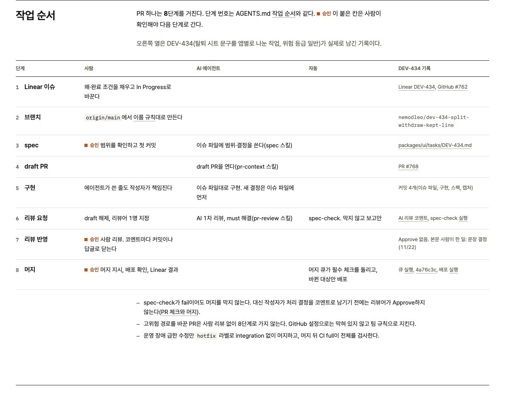
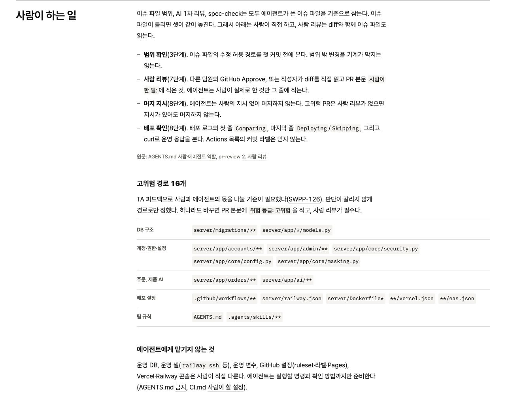
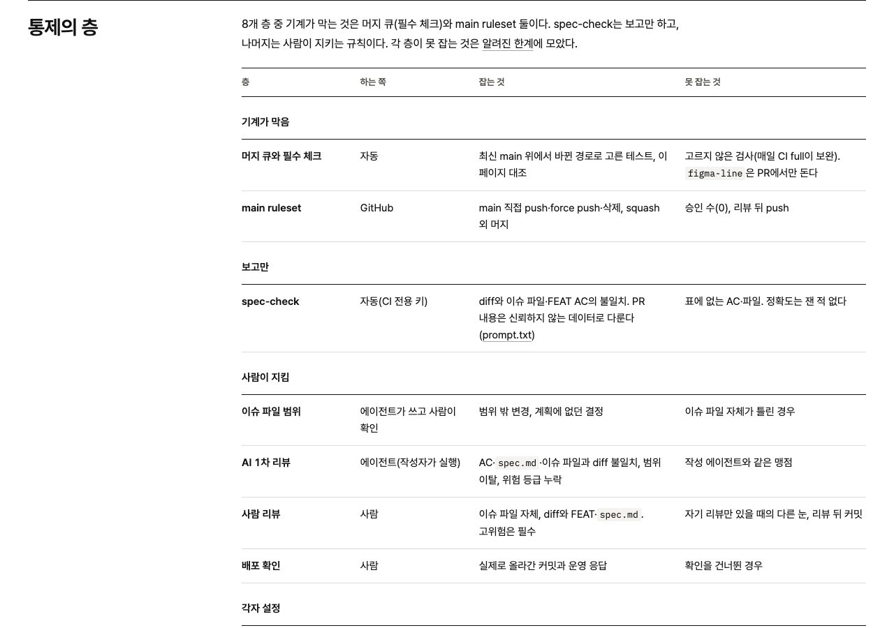
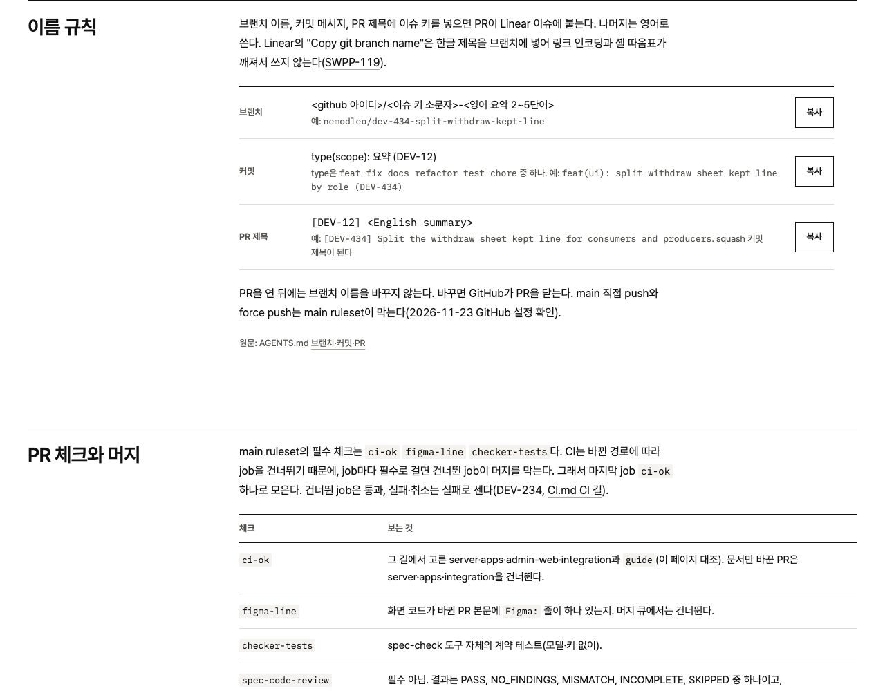

적용본 1280: 다섯 구간
DEV-437 · 제안 v2 · 보드 2/2 · 줄이지 않은 뷰포트 캡처승인 뒤 다듬어 docs/guide/index.html에 적용한 모습을 1280 폭에서 구간별로 찍었다(2026-11-27). check-guide는 값 34개, 저장소 링크 53개로 통과한다.

5초에 보이는 것무슨 문서인지, 그리고 기계가 막는 곳이 둘뿐이라는 것. 승인 전 시안의 숫자 넷은 뺐다.

합친 것지금의 흐름도 10칸, 작업 순서 8단계, DEV-434 표가 이 표 하나다. 칸은 1280에서 두 줄을 넘지 않게 문장을 줄였다.

왜오른쪽 주석 대신 본문 첫 문단에 이유를 적고, 원문 링크는 문단 끝에 둔다.


규칙버튼은 잉크 테두리 1px, 모서리 0, 높이 44. 한글이 섞인 코드는 본문 글꼴로, 영문 코드만 고정폭으로 쓴다.